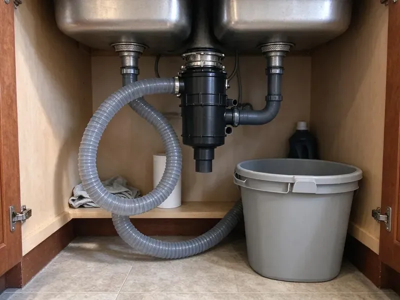

Garbage Disposal Repair in Winooski, VT
CKV Plumbing fixes InSinkErator, Waste King, Moen and other disposals in Winooski, VT homes with honest advice on repair versus replacement.
- Leak Checked Before We Go
- Jams Cleared Quickly
- Upfront Pricing
- Flat Price Before Work
Garbage Disposal Acting Up in Winooski, VT?
Call now and a licensed plumber can usually be there the same day.
Same-Day Garbage Disposal Repair in Winooski, VT
CKV Plumbing knows a dead disposal stops the whole sink in a Winooski kitchen. Water sits in the bowl. Our order is breaker, switch, reset button, then motor, since the inexpensive causes show up far more often than a dead motor.
Some of what we do:
- Tracing switch and wiring faults
- Clear clogged disposal drains and kitchen trap arms
- Fixing leaks at the flange and connections

Additional Kitchen Plumbing Services in Winooski, VT
Our kitchen plumbing services in Winooski, VT cover sinks, disposals, dishwashers, and grease traps so your kitchen stays clean, safe, and fully functional.


Customers
Why Choose CKV Plumbing for Garbage Disposal Repair in Winooski, VT?
We give straight repair-or-replace advice. Fix a three-year-old disposal that jammed, but replace a twelve-year-old one leaking from the body, and we will tell you which case yours is. That saves money.
- Housing Know-How, We know how water quality and house age affect a disposal's life.
- Quick Diagnosis, We figure out fast whether it is a jam, a leak, electrical or the motor.
- Trained Plumbers, Our plumbers repair every major disposal brand and most of the minor ones.
Citywide Coverage
No matter where you live in Winooski, VT, a plumber can get to you fast for disposal repair. Our dispatch is close by. Calls are routed to the plumber nearest your home, which keeps drive time out of your wait and gets the unit grinding again sooner.
Experienced Team
Our licensed plumbers have dealt with every disposal issue, from minor clogs to seized motors. They keep up with new models. Newer units have different mounts, sensors on some premium models and new grinding stages, and our team learns them before they show up in your kitchen.
Safety-First Approach
We follow local Vermont plumbing codes and the manufacturer's guidelines on every disposal repair. Grounding gets checked every time. Without a ground, a disposal in a wet cabinet can shock whoever touches the sink, so we verify it before we finish.
Trusted Certified Winooski Plumbing Services Professionals
At CKV Plumbing, we take pride in licensed, certified plumbing services throughout Winooski, VT. Those papers on the wall mean something. Every repair, install and maintenance visit follows strict safety and quality rules, and the plumbers doing the work carry recognized industry credentials.
Call Us Now PHCC Plumbing Contractor Recognition
PHCC Plumbing Contractor Recognition Better Business Bureau (BBB) Accreditation
Better Business Bureau (BBB) Accreditation Angi Certified Pro
Angi Certified Pro ISO 9001 Quality Management Certification
ISO 9001 Quality Management CertificationDisposal Repair in Winooski, VT: The Details
InSinkErator and Other Brand Repairs in Winooski, VT
Every brand, from InSinkErator to Waste King and Moen, mounts differently, so a flange leak is fixed with that brand's kit. InSinkErator uses a three-bolt or Quick Lock style ring, while Waste King uses an EZ Mount twist ring that comes off without tools. Common kits ride on our trucks. It means most repairs need only one trip.

Flange and Inlet Leak Repair in Winooski, VT
The flange, dishwasher inlet, discharge tube and body are where leaks start. We trace the leak, reseal the flange with plumber's putty and replace gaskets or tubes as needed. Water from the bottom usually means a failed internal seal, which makes replacement the smarter move. It is not a repairable part.
Preventive Care and Longevity in Winooski, VT
Run cold water before, during and after grinding, and let it go about 15 seconds after the motor stops so the food clears the trap. Grease poured in with hot water coats the chamber and the pipe, while cold water keeps it solid so the impellers can break it up. Stringy peels cause most jams. Throw out celery, corn husks and artichoke leaves.
Noise and Odor Diagnosis in Winooski
A rattle that stops after a few seconds is usually a spoon or a pit bouncing in the chamber. A constant high whine means something else. A steady whine usually points to failing motor bearings, and the noise keeps building until the motor locks up. Odors usually trace to the splash guard. The guard comes out, the chamber gets cleaned and a torn guard gets replaced.
Leak Detection and Repair in Winooski, VT
Disposal leaks come from four places: the sink flange, the dishwasher inlet, the discharge tube and the housing itself. We dry everything, run water with a little food coloring and watch to see which joint shows color first, since water runs down the outside of the unit and hides the real source. Most leak points can be repaired. A leak from the housing means it is time for a new unit.
Emergency Disposal and Sink Backup Repair in Winooski
A failed disposal can push water back into the sink and dishwasher. If water is rising or reaching the floor, shut off the disposal and the dishwasher and call us, since running either one just adds more water to the cabinet. We respond fast.
Leaking Disposal Fix in Winooski, VT
A drip at the top usually means the sink flange putty has dried out. We drop the unit, pull the flange, clean off the old putty and reset it with fresh putty and new gaskets, then hang the disposal back up. Most top leaks stop there. Side leaks are usually the discharge gasket or the dishwasher hose clamp.

Humming Disposal Repair in Winooski
Humming with no spin almost always means a jam. Bones, pits, glass and spoons are the usual suspects. With the power off, we free the flywheel using the hex socket underneath, pull the object, and test the motor and reset with water running.
Nearby Disposal Repair in Winooski, VT
Searching for disposal repair near you in Winooski, VT? CKV Plumbing has plumbers who live and work nearby, which usually means a same-day visit. Leave the disposal off until we arrive. Flipping the switch on a jammed unit over and over can burn out the motor and turn a quick fix into a new disposal.
The water here matters for disposals. Scale from hard water collects on the grinding ring and chamber, and knowing that lets us tell a unit problem from a buildup problem. You get a fix that lasts.
CKV Plumbing at a Glance
- Licensed and insured plumbers serving Winooski, VT
- 24/7 emergency service with same-day scheduling
- Upfront, flat-rate pricing before work begins
- 4.8-star rated by 553+ Vermont customers
Winooski Map
Winooski Information
- Population
- 8,251
- Area codes
- Local
- Service area
- Winooski and communities within 40 miles
- Nearby
- Burlington, Essex Junction, South Burlington, Shelburne
Disposals in Winooski, VT last eight to twelve years with decent care, and a quick repair often buys several more. Some Vermont wells carry iron, manganese or other naturally occurring minerals, so a lab test is the first step before choosing treatment.
Talk to a Plumber
Call CKV Plumbing for honest, reliable plumbing from people who know the trade in Winooski, VT.
Our Specialized Plumbing Services in Winooski, VT
At CKV Plumbing, you get every kind of plumbing service from one company across Winooski, VT. From leak detection to full system installs, our team works fast and charges fair prices on homes and commercial properties alike. Explore our core services below:


Our Garbage Disposal Repair Routine in Winooski, VT
Here is how we get your disposal back in action.
Book a Visit
Call (802) 209-5139 to schedule. We ask a few quick questions so the right parts come on the truck.
Inspect and Quote
A licensed plumber inspects the disposal at your Winooski home and gives you a flat price in writing.
Repair It
With your go-ahead, the plumber repairs the unit and runs it with water to confirm the fix.
Frequently Asked Questions About Garbage Disposal Repair in Winooski
It depends on what failed. A jam is usually $100 to $200, and a resealed flange, new switch or wiring repair often comes in around $250 to $500. We quote before starting.
Plan for one to two hours. Quick fixes may take under 30 minutes, but dropping the unit to reseal a flange or replace a gasket takes more time. We tell you up front.
Clearing a jam with a hex key or pressing the reset is safe with the power off. Persistent leaks, electrical problems or motor issues are a different job, and they are safer and quicker for a plumber to handle. Keep your hands out of the chamber.
Grind with cold water running, and run the unit every few days even if there is little in it, which keeps the impellers moving and helps prevent rust. Add food a little at a time rather than stuffing the chamber, and skip grease, coffee grounds and stringy scraps. A few citrus peels freshen it.
Hard and stringy food are the biggest causes. Bones, pits, celery, corn husks and non-food items jam the impellers, and running hot water with grease coats the chamber and lets scale build faster in hard water areas. Power surges can also hurt motors.
InSinkErator, Waste King, Moen, GE and KitchenAid are all brands we fix, along with most others.
Most repairs take 30 minutes to an hour. Replacement, if it comes to that, usually takes one to two hours.
Some fixes are safe for homeowners. With the power off, you can press the red reset button on the bottom and turn the flywheel with a 1/4 inch hex key in the socket underneath, which clears most jams. Leave wiring and leaks to a plumber.
What Our Customers Say About Our Plumbing Experts

Rachel N.
Hard water was leaving white crust on every faucet and our dishwasher was struggling. The tech tested the water, recommended a softener sized for a family of five, and installed it with a bypass valve in one afternoon. The spots on our glasses are gone.
Water Softener · Essex Junction, VT
Mark T.
The floor drain in our office break room backed up every few weeks. The plumber ran a cable, then put a camera down and found roots at a joint about thirty feet out. Seeing it on the screen made the decision easy.
Drain Cleaning · St. Albans, VTMegan L.
Our upstairs tub drained so slowly that every shower turned into a bath. CKV Plumbing pulled a wad of hair out of the stopper and then snaked the line past the trap. Three months later it still drains fast.
Drain Cleaning · Essex Junction, VTGreg S.
I manage a small strip center with six tenants. CKV Plumbing handles our annual backflow testing and fixed a recurring clog in the shared sewer line that had been backing into the nail salon. Their reports come in clean and on time.
Commercial Plumbing · Middlebury, VT
Tyler J.
We bought a taller comfort height toilet for my dad, who just had knee surgery. The plumber pulled the old one, found the flange was cracked, and replaced it before setting the new bowl. Took about two hours.
Toilet Installation · South Burlington, VTLisa C.
Water was pouring out from under the washing machine on a holiday weekend. CKV Plumbing talked me through closing the valves over the phone and had a plumber at the house within ninety minutes. It was a burst fill hose.
Emergency Plumbing · Shelburne, VT